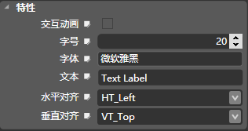

文本区[UITextArea]
图标
描述
UITextArea的类是一个UIWidget子类，它实现了在触摸屏上的文本区。
触摸一个文本区时拦截事件和动作消息发送到目标对象时。设定的目标和行动方法都继承自UIWidget。该控件提供了方法来设置文本区的显示宽高，字号，字体，对齐方式，文本内容，是否缩放等属性。
九宫格属性
常规属性
控件布局
绝对布局模式
百分比
设置是否开启百分比模式 。
坐标
设置控件的位置，单位为像素。
- X：设置控件的坐标X值
- Y：设置控件的坐标Y值
比例（%）
设置控件的位置，值相对于父控件尺寸的百分比。
相对布局模式
停靠
设置控件的停靠对象，默认为父控件，还可以选择和控件本身没有布局关系的同级控件。
停靠父对象
- 横向对齐：设置控件水平方向上的对齐方式，依次为“左边”、“居中”、“右边”。
- 纵向对齐：设置控件竖直方向上的对齐方式，依次为“上边”、“居中”、“下边”。
停靠同级对象
- 停靠边界：设置相对于停靠对象的相对边界，当前控件将会紧贴着停靠对象的上下左右之中的一个边。
- 横向对齐：设置控件水平方向上的对齐方式，依次为“左边”、“居中”、“右边”。（仅在停靠边界为”上“或者”下“时可以使用）
- 纵向对齐：设置控件竖直方向上的对齐方式，依次为“上边”、“居中”、“下边”。（仅在停靠边界为”左“或者”右“时可以使用）
边缘
设置控件相对于停靠位置的位移。单位为像素。
注意：值只在特定的情况下设置
线性横向布局模式
纵向布局
设置控件竖直方向上的对齐方式，依次为“上边”、“居中”、“下边”。（仅在停靠边界为”左“或者”右“时可以使用）
边缘
设置控件相对于停靠位置的位移。单位为像素。
注意：值只在特定的情况下设置
线性纵向布局模式
横向布局
设置控件水平方向上的对齐方式，依次为“左边”、“居中”、“右边”。（仅在停靠边界为”上“或者”下“时可以使用）
边缘
设置控件相对于停靠位置的位移。单位为像素。
注意：值只在特定的情况下设置
特性

交互动画
设置点击文本时是否显示交互动画。交互动画指点击文本时，文本区整理先放大后缩小的视觉效果。
字号
表示字体大小。
字体
现在只支持宋体，黑体，微软雅黑。
文本
显示的文本内容。
水平对齐
设置控件的水平对齐方式：
1.HT_Left:文本左对齐
2.HT_Center:文本水平居中
3.HT_Right:文本右对齐
垂直对齐
设置控件的垂直对齐方式：
1.VT_Top:文本上对齐
2.VT_Center:文本垂直居中
3.VT_Bottom:文本底端对齐
Copyright © 2013 CocoStudio.org. All Rights Reserved. 版本v1.2.0.0